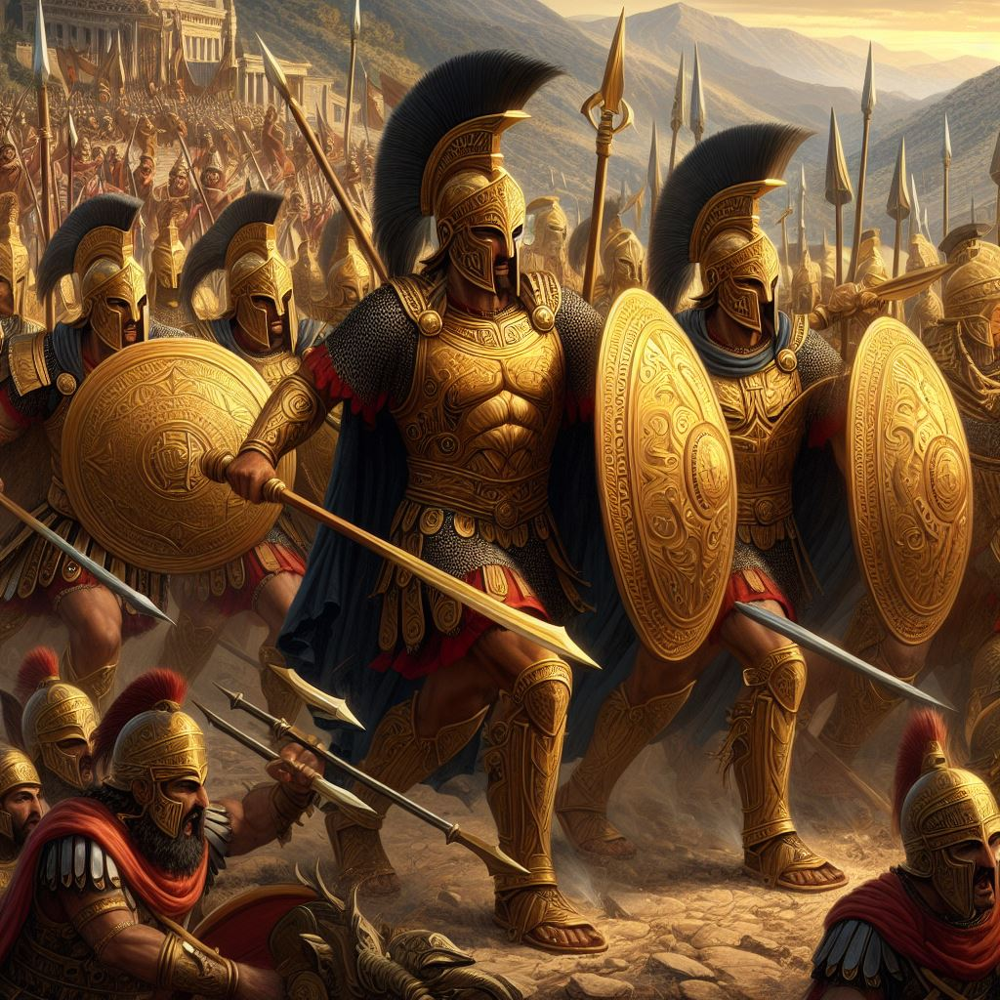
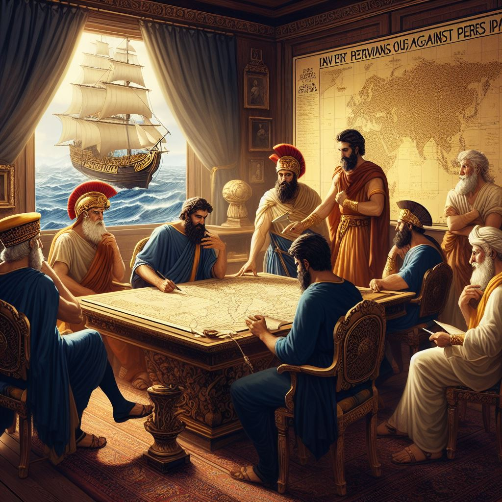
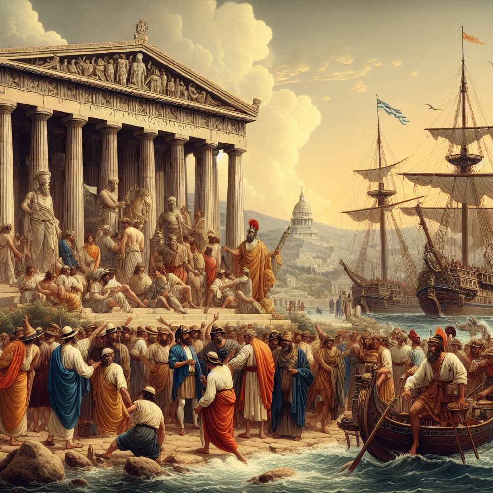
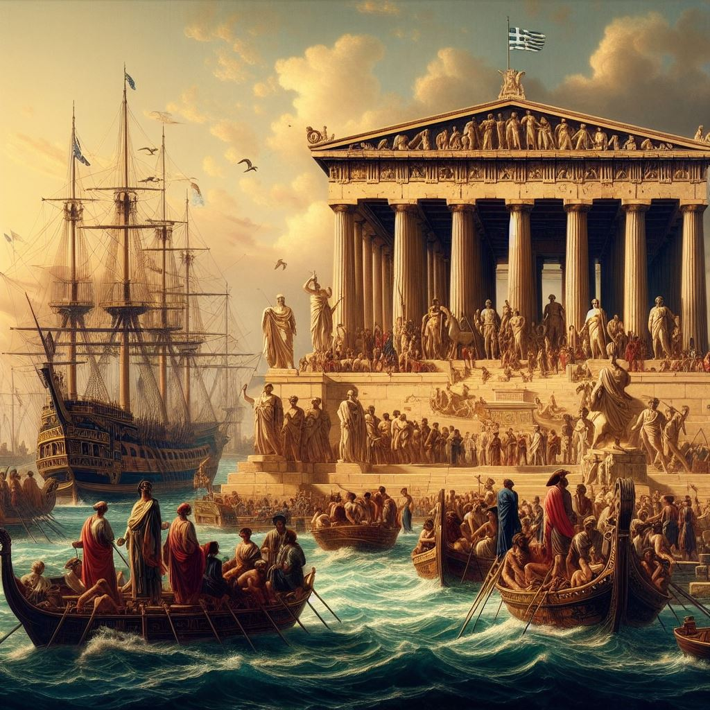
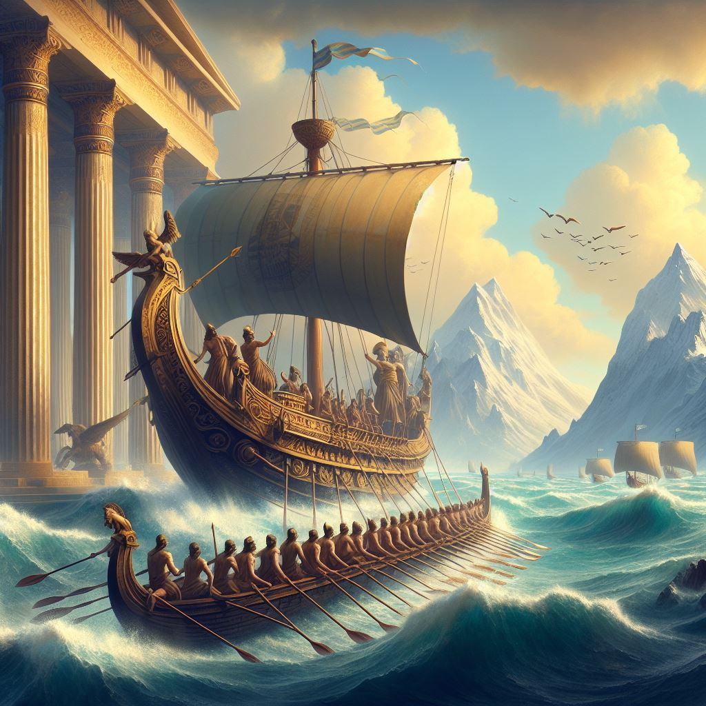

Welcome to Dig Deeper
Scroll down to explore more
Scroll down to explore more
Athens developed a strong navy during its struggle against the Persian Empire. At the Battle of Marathon in 490 BC, Athenian soldiers helped halt a Persian invading army. Soon after, Themistocles, an Athenian politician, rose to power.
Themistocles aimed to make Athens great by exploiting what he saw as Persia's major weakness – their navy. He convinced the Athenians to build their own navy using money from their silver deposits. This marked the beginning of their legendary naval power.
Athens is known for its devotion to maritime life, recognized for its superior skills at sea. Its naval reputation was solidified by the defeat of the Persians at Salamis in 480 and the subsequent Athenian maritime empire in the Aegean.
Athens was famous for its strong connection to the sea, and it was well-regarded for its exceptional abilities in maritime activities. The city's naval reputation was firmly established after the decisive victory over many, such as the battle at Marathon and Salamis, which led to the subsequent rise of the Athenian maritime empire in the Aegean region.
The Ancient Greek navy's remarkable speed and agility were a result of their advanced ship design, skilled sailors, and effective naval tactics, which allowed them to swiftly navigate the seas with their long and narrow triremes, utilizing a combination of oars and sails to take advantage of favorable wind and water conditions.
